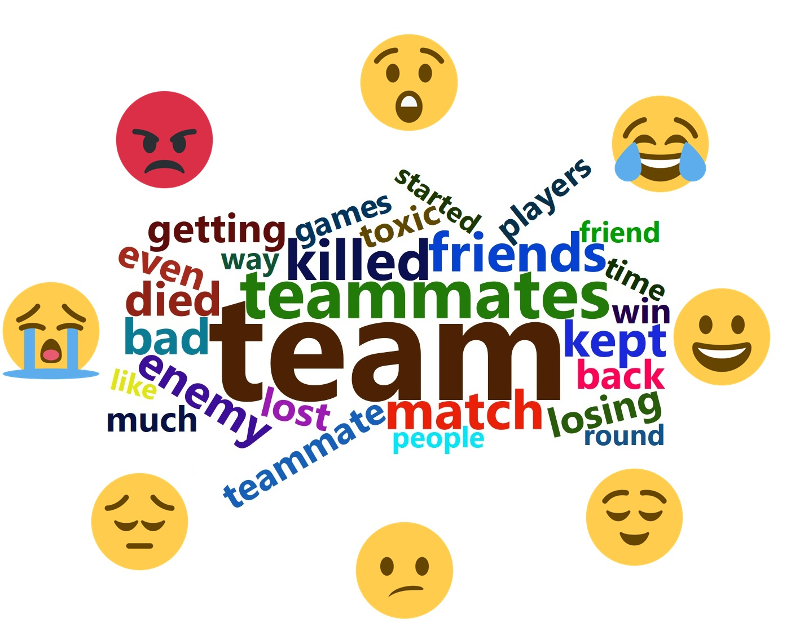

Ongoing
Projects
Here you'll find information on all the
research that I'm currently working on.
Daily Moods, Emotions, and Videogames
People play videogames for an assortment of reasons.
For many folks, gaming is a highly emotionally-charged competitive experience. Others play videogames as an outlet to escape the stresses
of daily life. We know from previous research that playing videogames can be an effective means of 'mood repair', but some contend
that overreliance on videogames to avoid negative moods is a key component of videogame addiction. The purpose of this project is to
add some clarity to the 'dysregulated gaming' literature by assessing daily gamers' moods, their gaming behaviours, and the emotions those
behaviours elicit throughout the day.
Participant Recruitment Status: Active
On Tilt and Ragequitting
 Ask any competitively-oriented gamer, and they will tell you all about the phenomenon colloquially called tilt.
The term 'tilt' originates from the professional poker world, and can be described as a cyclical affective experience wherein anger and frustration stemming from performance failures lead players to adopt overly-aggresive
performance strategies, leading to more performance failures. Though tilt is well-known in gaming circles, little academic research has taken to exploring how and why players get tilted, and how best to manage it. The goal of this
project is to fill that gap in the literature. Our initial research ( available here!) suggests that tilt seems to be a function of people's motives for playing games, but their ability to regulate their emotions can buffer against it.
Ask any competitively-oriented gamer, and they will tell you all about the phenomenon colloquially called tilt.
The term 'tilt' originates from the professional poker world, and can be described as a cyclical affective experience wherein anger and frustration stemming from performance failures lead players to adopt overly-aggresive
performance strategies, leading to more performance failures. Though tilt is well-known in gaming circles, little academic research has taken to exploring how and why players get tilted, and how best to manage it. The goal of this
project is to fill that gap in the literature. Our initial research ( available here!) suggests that tilt seems to be a function of people's motives for playing games, but their ability to regulate their emotions can buffer against it.
Participant Recruitment Status: Complete
Publications, Presentations & Posters
- Bonk, D., Tamminen. K. (2023, October). The experience of videogame tilt, moods, and well-being in daily gamers: An ecological momentary assessment. Poster presented at the 2023 Canadian Society for Psychomotor Learning and Sport Psychology (SCAPPS) Conference, Kingston, Ontario
- Bonk, D., Tamminen. K. (2022, October). Getting tilted: Competitive motives, emotion dysregulation, and tilt frequency among videogame players. Poster presented at the 2022 Canadian Society for Psychomotor Learning and Sport Psychology (SCAPPS) Conference, Montreal, Quebec
Measuring In-game Emotional Experiences

Defining exactly what an emotion is is a tricky endeavour, and building tools to assess emotions is even trickier.
There's an added layer of complexity in measuring emotions in videogames when you consider the plethora of genres of games that exist,
each with their own quirks and nuances that lead to unique emotional experiences. The aim of this project was to characterize players' emotional
experiences between genres of videogames, and to test the psychometric quality of tools to assess gamers' in-game emotional experiences. From this project,
we've developed and validated the Discrete Emotions Questionaire for Videogames (available here, or free here!), and have completed some exploratory
work assessing how players describe emotional experiences between different game genres (available here!).
Participant Recruitment Status: Complete
Publications, Presentations & Posters
- Bonk, D., & Kim, J. (2022). Factorial and construct validity of the Discrete Emotions Questionnaire for Videogames (DEQ-VG). Entertainment Computing, 42, 100488. https://doi.org/ 10.1016/j.entcom.2022.100488
- Bonk, D., & Tamminen, K. A., (2021, October). Exploring emotional experiences across different genres of videogames. Poster presented at the International Society of Sport Psychology 15th World Congress, online.